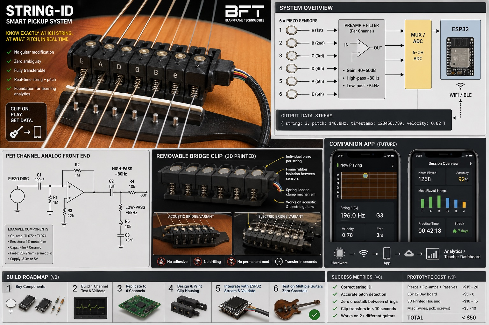
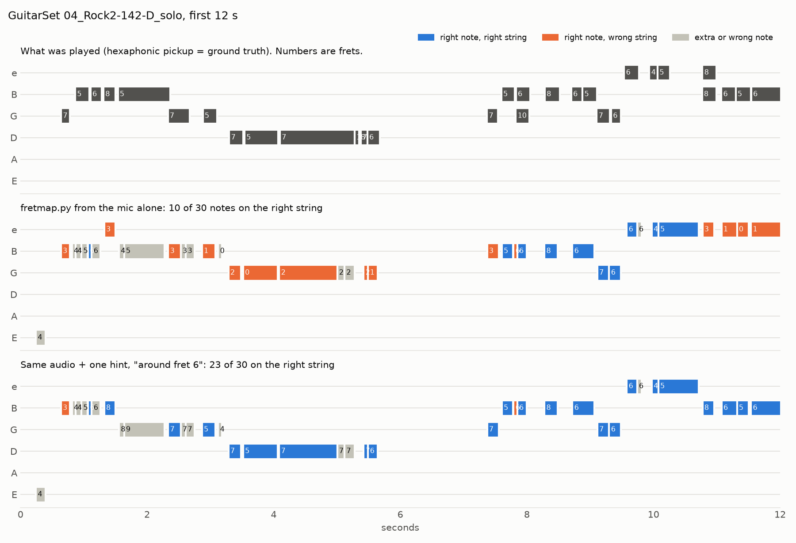
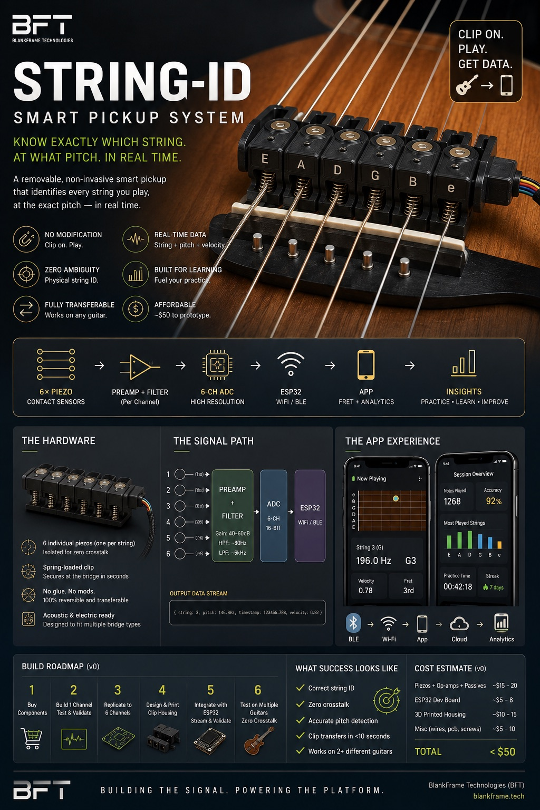

FretGPS
A positioning system for your fretboard. You play, and your phone shows which string and fret every note came from, how far you bent it, and which strings you muted, as a live animated fret map.
Idea stagePhase 0 measuredOpen source

Audio knows the pitch, not the place
On a guitar the same E4 can be played in five spots: e 0, B 5, G 9, D 14, A 19. Every tuner, tab app and learning app has to guess which one you used.
FretGPS measures the place. A removable clip at the bridge holds one sensor per string, so the string is measured instead of guessed. The pitch on that channel gives the fret, and the pitch curve gives the bend.
t = 12.48 s 0 1 2 3 4 5 6 7
1 e ‖───┼───┼───┼───┼───┼───┼───┼───
2 B ‖───┼───┼───┼───┼───┼───┼───┼───
3 G ‖───┼───┼───┼───┼───┼─●─┼───┼─── C4, bending +100¢ → C♯4
4 D ‖───┼───┼───┼───┼───┼───┼───┼───
5 A ✕ muted
6 E ✕ mutedEvery sensing source, phone or hardware, emits the same note event, so the app doesn't care where it came from:
{"t": 12.48, "dur": 0.31, "string": 3, "fret": 5, "note": "C4", "hz": 261.6, "bend_cents": 100}Can a phone skip the hardware?
Phase 0 tested whether a plain recording of the guitar can produce the fret map. The prototype, fretmap.py, was scored against GuitarSet: 360 real acoustic-guitar recordings with the true string and fret of every note.
Notes found
Single notes, note F1 with Basic Pitch. 71% for chord notes. A simulated cheap phone costs only 3.6 points.
Right string, audio alone
On lead lines, even with perfect pitches, using a least-hand-movement rule. A tuner app's "lowest fret" gets 31%.
With a position hint
One "I'm around fret N" per take gives 79%; a rolling hint, like a camera would see, gives 89%. Ideal hints, so upper bounds.
| Signal | From a phone recording alone |
|---|---|
| Which notes, single lines | ✅ Mostly: 82% F1 |
| Which notes, chords | ⚠️ Partly: 71% F1 |
| Which string and fret | ❌ A guess: 43% on solos · ⚠️ 79–89% with a hand-position hint |
| Bend amount in cents | ✅ Straight from the pitch curve |
| Which strings are muted | ❌ Audio only shows that a note stopped |


Verdict: a phone gets you the notes and the bends, but only guesses the string. The string guess is mostly a "where is the hand" problem, which gives three tiers worth building in this order:
1 · Phone only
Free. Notes, bends, replay. The app's first data source.
2 · Phone + position hint
Tap the neck, let the camera watch your hand, or add a few-dollar distance sensor on the headstock. Tested next.
3 · The String-ID clip
Muting, exactly which strings rang, and a ≥ 95% string ID. The premium tier.
Full write-up, recording protocol and sources: phone-audio-experiment.md.
The String-ID clip
Six piezo sensors, one per string, feed a buffer and band-pass filter, a multichannel audio ADC and an ESP32-S3 that tracks pitch per string and streams note events to the app over BLE.
No modification
Clips onto the bridge. No drilling or glue, and it moves between guitars.
String before pitch
Each channel tracks one string, so a chord becomes six easy monophonic problems instead of one hard polyphonic one.
Muting becomes visible
A muted string's channel goes quiet, something no phone-only method can report.


Roadmap
Every phase ends with a measurement, not a demo.
| Phase | What | Exit criterion | Status |
|---|---|---|---|
| 0 | Phone only: audio → notes → string and fret guess | Note F1 ≥ 80% on single-note lines from your own phone | ✅ Prototype + GuitarSet measurement · ⏭ own recordings |
| 0b | Real position hints: your "around N", phone camera, headstock distance sensor | Right string ≥ 85% on your riffs | ⬜ Next |
| 1 | One piezo on the bench | Clean pitch on all six open strings and the 12th fret | ⬜ |
| 2 | Two-channel crosstalk go/no-go | ≥ 12 dB separation between adjacent strings at the attack | ⬜ |
| 3 | Six-channel clip + ESP32-S3 + BLE event stream | ≥ 95% string + fret · ≤ 50 ms pluck to screen · moves between guitars in < 10 s | ⬜ |
| 4 | App: live fret map, bend meter, mute markers, replay, tab export | The replay matches what you played in a real practice session | ⬜ Can start now on phone-audio events |
Parked until Phase 3 passes: the capacitive fretboard overlay, teacher dashboard, AI coach, analytics and cloud. "GPS" is a metaphor; there is no GPS module.
Try the phone-only prototype
Python 3.11 and ffmpeg. Record a riff on your phone and get ASCII tab or JSON note events.
git clone https://github.com/the-abraar/FretGPS && cd FretGPS/experiments/phone-audio
python3.11 -m venv .venv && source .venv/bin/activate
pip install -r requirements.txt # also needs ffmpeg (brew install ffmpeg)
python test_fretmap.py # self-check on a synthesized riff
python fretmap.py ~/Downloads/riff.m4a # any phone recording → ASCII tab
python fretmap.py ~/Downloads/riff.m4a --around 7 # tell it roughly where your hand is
python fretmap.py ~/Downloads/riff.m4a --json